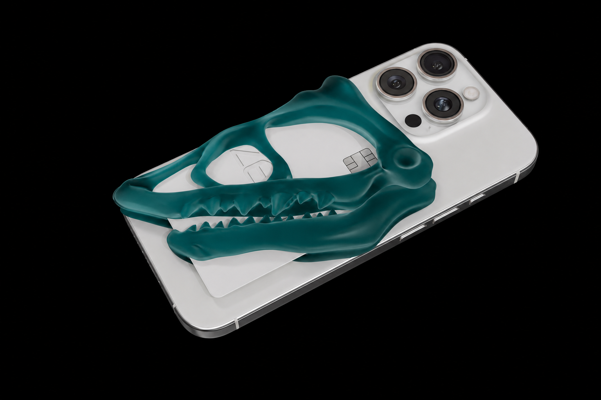
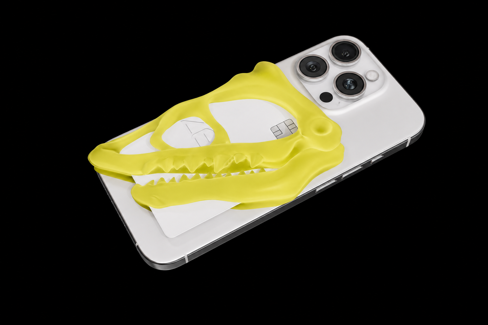

OBJECT / 02
SHARK
AIRPODS CASE.
열리고 닫히는 상어의 입구를, 매일 꺼내는 물건의 보호 구조로 바꿨습니다.
- FORM
- 상어 골격의 입구
- FUNCTION
- 에어팟 수납 / 보호
- CAPACITY
- 에어팟 케이스 1개
- COMPATIBILITY
- 에어팟 전용
- PROCESS
- 레이어드 3D 프린팅

 SHOP
SHOP
손에 오래 남는 곡선으로 만든 모레이 맥세이프 카드 홀더.

스크롤하며 케이스 안쪽의 골격 구조를 살펴보세요.
유기적인 형태, 기계적인 쓰임.
기억될 만한 구조를 만듭니다.
스케치부터 모델링, 출력과 가공까지. 구조가 오브제가 되는 과정을 기록합니다.
 01 / 스케치자연에서 발견한 골격과 곡선을 선으로 기록합니다.02 / 모델링곡선과 빈 공간을 하나의 구조로 모델링합니다.
01 / 스케치자연에서 발견한 골격과 곡선을 선으로 기록합니다.02 / 모델링곡선과 빈 공간을 하나의 구조로 모델링합니다. 03 / 출력레이어를 쌓아 표면과 골격의 관계를 만듭니다.04 / 가공손에 쥐는 움직임 속에서 형태와 기능을 다듬습니다.
03 / 출력레이어를 쌓아 표면과 골격의 관계를 만듭니다.04 / 가공손에 쥐는 움직임 속에서 형태와 기능을 다듬습니다.모든 요소는 쓰임과 조화를 위해 설계했습니다. 하나의 구조로 움직이고, 오래 사용할 수 있도록 만듭니다.

3D 프린팅의 표면은 과정의 일부입니다. 미세한 결은 압력과 시간이 지나간 기록처럼 남습니다.
MORAY / COLOUR STUDY
세 가지 컬러로 같은 구조를 비교하세요.



OSSIUM / COMPLETE ARCHIVE
모든 오브제를 선택해 형태와 쓰임, 제작 방식을 확인하세요.
VIEW ALL RECORDSOBJECT / 02
열리고 닫히는 상어의 입구를, 매일 꺼내는 물건의 보호 구조로 바꿨습니다.
OBJECT / 03
가벼운 골격의 흐름이 손과 물건을 이어 주는 작은 연결점이 됩니다.

OBJECT / 04
겹쳐진 골격의 빈 공간이 작은 도구를 감싸고, 꺼내는 동작을 남깁니다.


OSSIUM / ORDER DESK